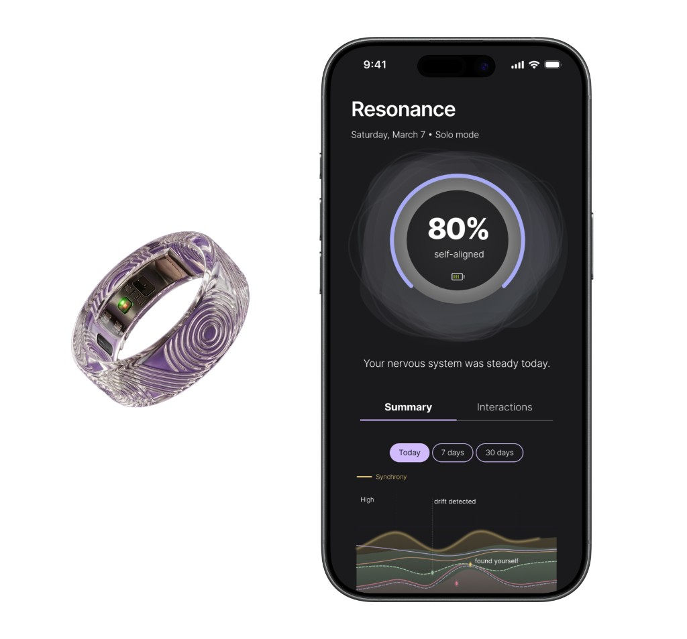

Resonance
Designed a speculative wearable and companion app in a 4-day hackathon that visualizes physiological synchrony to support self-awareness and relational wellness. Executed concept definition, UX design, and prototyping in Figma to translate complex biometric data into intuitive, user-facing insights.
View PrototypeHackathon Requirements
The Challenge
Design a tool that tracks, measures, visualizes or quantifies an aspect of human sensory experience. Within the tool, provide the ability to detect, enhance, or manipulate those same sensory inputs.
Context
The “quantified self” movement has reshaped how we understand our bodies and behaviors, but current tools only begin to capture this potential. Early designers of fitness trackers had to imagine capabilities—like continuous sensing and embedded technology—long before they were technically possible. Following that same spirit of speculation, this challenge asks us to envision the next frontier of self-knowledge by designing for sensory capabilities that do not yet exist.
Our Mission
Identify something intangible, invisible, or previously unmeasurable about the human sensory experience and design a speculative tool to track and influence it. This tool should be designed to support a wellness goal or behavioral change for an individual or a group.
Design Requirements
Your solution should feel novel and future forward, not a remix of an existing app and not something you generate on the first go. This is a speculative design challenge rooted in human need.
Idea 1: Social Battery Monitor
Pros
- Helps prevent social burnout
- Feasible implementation
- Addresses a real, relatable problem
- Makes the intangible visible
- Strong visualization concept
Cons
- There’s existing similar products, might be a “remix”
- Oversimplifying relationships
- Needs a stronger “future forward” concept
- Overlap with current existing wellness tools
Idea 2: Sensory Overload Wear
Pros
- Multi-sensory approach
- Immediate, actionable intervention
- Clear and meaningful use case
- Future-forward idea if combined into one product.
Cons
- Overlap with existing products (e.g. noise cancelling headphones) might be a “remix”
- Lacks deeper “invisible sensing”
- Familiar interaction model
- Limited speculative leap


What is Resonance?
Resonance is a smart ring and companion app that makes physiological synchrony legible — for the first time.
The Problem
We spend much of our lives trying to understand how we feel—but many of those feelings are hard to read or explain.
The Shift
Disconnection doesn’t happen all at once; it appears as a subtle drift in our relationships, energy, and well-being through signals we sense but can’t interpret.
The Solution
Resonance makes these invisible signals visible, helping people understand and act on their emotions, relationships, and energy.
Interpersonal Interoception
Interoception
Feeling your own body — now extended to the person next to you
Thermoception
Temperature as a closeness signal (wild, but it works)
Social presence
That felt sense of another person being really there — turned up
Chronoception
Two people falling into the same rhythm without trying
The Science
- Heart rate variability actually mirrors between people who connect.
- Breathing syncs up, even when you’re not trying.
- Skin conductance spikes happen together, not just solo.
- Documented in couples, close friendships, and great teams.
- The biology is real. It just never had an interface before.
The Ring Prototype
The Resonance Ring
A sense you've always had. Now legible.
The band senses your nervous system's social responses throughout the day — no paired device needed. Your personal frequency map builds over time.
Resonance is building. Your nervous system is at ease in this presence — the ring confirms what your body already knows.
Both rings beat in unison. You and your paired person are genuinely in phase — not just in the same room.
Subtle cooling and arrhythmic tap. Same space — different physiological fields. Information, not verdict.
One tap sends warmth to their ring. A non-verbal signal that crosses any room: "I'm here with you."
You've been physiologically dysregulated for a while. Not an alarm — an invitation to notice. A breath taken on your behalf before your mind has had time to form a story about why.
Designed to read as jewellery. Worn where bonds are already symbolised.
grade 5 · skin-safe
skin-warm · hypoallergenic
wider than standard to hold sensor surface
wireless charge cradle
raw biometrics never leave the ring
invisible technology
Resonance App Wireframes
Resonance App Home Screen • Solo Mode
Pair a new connection to discover - Pair Mode
Pair Mode - Romantic
Pair Mode - Friendship
Patterns & Settings Pages
Resonance App Prototype
Press play and click around!